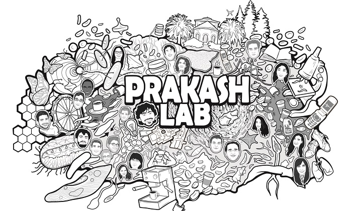

Frugal Science in the Age of Curiosity - Manu Prakash

A couple weeks ago we posted about Punch Card Programmable Microfluidics, and long before that we posted about an early version of the Foldscope and we posted on my personal favorite of the bunch, the paperfuge. All of these are projects of Dr. Manu Prakash, whom we recently saw talk at the Marine Biological Laboratory in Woods Hole, Massachusetts. Below is a delightful recording the the American Physical Society made of a similar talk given this past March in LA, and you can watch it below. We'd show you the recording at the MBL, but it doesn't seem to be working at this time.